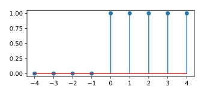

Impulse and Step Response
Pieter PHere, we'll discuss two important signals that are often used in signal processing, the delta function or unit impulse, and the unit step function.
The Kronecker Delta Function
The Kronecker delta function or unit impulse \(\delta[n]\) is defined as a
discrete function that is one when \(n\) is zero, and zero everywhere else:
$$ \delta: \mathbb{Z} \rightarrow \mathbb{R}:
n \mapsto \delta[n] \triangleq
\begin{cases}
1 & n = 0 \\
0 & n\ne0
\end{cases} $$
An alternative notation is \(\delta_{n,k}\). This value is one if \(n = k\)
and zero if \(n \ne k\):
$$ \delta_{n,k} \triangleq \delta[n-k] $$

Impulse response
The impulse response \(h[n]\) of a DTLTI system \(T\) is defined as the output of the system when a Kronecker delta function is applied to its input: $$ h[n] \triangleq T\left(\delta[n]\right) $$ The letter \(h\) will be used to refer to the impulse response of a system. As we'll see later, the impulse response can be used to define the system.
Properties of the Kronecker Delta Function
The most important property of the Kronecker delta is its ability to select
a single term from an (infinite) sum:
$$ \begin{split}
&\sum_{n=0}^\infty x[n]\cdot\delta[n-k]\\
=\;& x[0]\cdot\delta[0-k] + x[1]\cdot\delta[1-k]
+ \ldots + x[k]\cdot\delta[k-k] + \ldots \\
=\;& x[k]
\end{split} $$
As you can see, all terms where \(n \ne k\) are zero, so only the \(k\)-th
term remains.
This is sometimes referred to as the sifting property of the delta
function.
The Heaviside Step Function
The (discrete) Heaviside step function \(H[n]\) is defined as a discrete function that is zero when \(n\) is negative, and one if \(n\) is zero or positive: $$ U: \mathbb{Z} \rightarrow \mathbb{R}: n \mapsto U[n] \triangleq \begin{cases} 0 & n \lt 0 \\ 1 & n \ge 0 \end{cases} $$ 
Step Response
Just like the impulse response, we can define the step response as the output of the system when the Heaviside step function is applied to the input: $$ y_\text{step}[n] \triangleq T\left(U[n]\right) $$ The step response is an important tool when investigating how a system responds to transients.
Unlike the impulse response, there is no specific symbol or letter for the step response.
Properties of the Heaviside Step Function
The step function can also be written as the cumulative sum of the delta function: $$ U[n] = \sum_{k=-\infty}^{n} \delta[k] $$